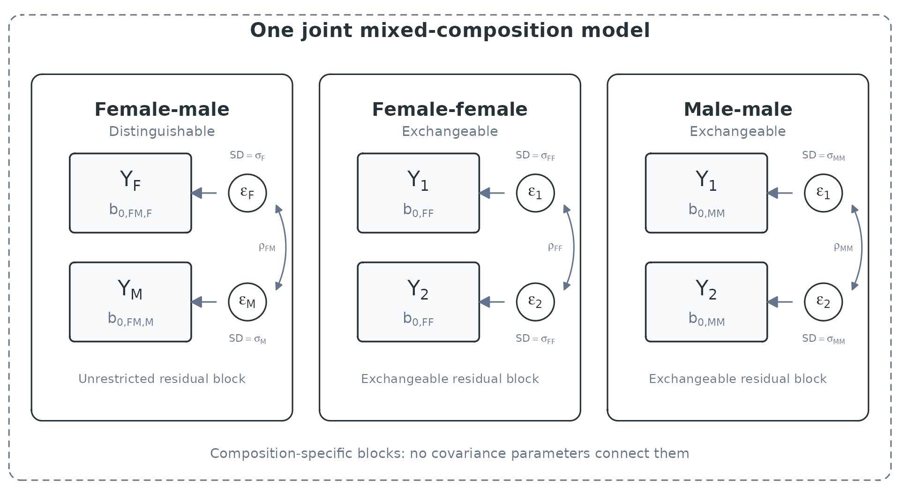

APIMs with Mixed Dyad Compositions
Pascal Küng
mixed-apim.RmdThis vignette covers APIMs that combine distinguishable and exchangeable dyad compositions in one analysis. The unified SEM presentation by Bolger, Laurenceau, and DiGiovanni is the basis and inspiration for this vignette (Bolger et al. 2025). Here, we implement the same general idea in one multilevel model.
For the general data-preparation workflow, go to the Getting Started vignette. For regular APIMs, refer to the Actor-Partner Interdependence Model vignette. For DIM predictors and their equivalence to APIM effects in exchangeable dyads, see the Dyad-Individual Model vignette. For DSM predictor scores and their relationship to APIM effects in distinguishable dyads, see the Dyadic Score Model vignette.
Cross-sectional mixed-composition APIM
The data were simulated with the following fixed effects and
covariance parameters. For exchangeable dyads, sum_variance
and diff_variance imply the within-dyad correlation.
#> block parameter value
#> 1 female_x_male female_mean 5.50000
#> 2 female_x_male male_mean 4.50000
#> 3 female_x_male correlation -0.30000
#> 4 female_x_female mean 5.80000
#> 5 female_x_female sum_variance 0.67500
#> 6 female_x_female diff_variance 0.32500
#> 7 male_x_male mean 4.20000
#> 8 male_x_male sum_variance 0.63375
#> 9 male_x_male diff_variance 1.05625We first prepare the data with prepare_interdep_data(),
which identifies all observed dyad compositions.
mixed_cross_data <- prepare_interdep_data(
example_dyadic_crosssectional_mixed,
group = coupleID,
member = personID,
role = gender,
seed = 123
)
print(mixed_cross_data, n = 4)
#> # interdep data
#> # Rows: 640 | Dyads: 320 | Intensive longitudinal: no
#> # Structure: group = coupleID, member = personID, role = gender
#> #
#> # Dyad compositions:
#> # female_x_female exchangeable 100 dyads
#> # female_x_male distinguishable 120 dyads
#> # male_x_male exchangeable 100 dyads
#> #
#> # Added columns:
#> # .i_composition inferred dyad composition
#> # .i_composition_role composition-specific member role
#> # .i_is_{comp-role} composition-role indicator columns
#> # .i_diff_{comp} composition-specific sum-diff contrasts with arbitrary
#> # direction; 0 for distinguishable dyads or other
#> # exchangeable compositions
#> #
#> # A tibble: 640 × 12
#> personID coupleID gender satisfaction .i_composition .i_composition_role
#> <int> <int> <fct> <dbl> <fct> <fct>
#> 1 1 1 female 4.95 female_x_male female_x_male_female
#> 2 2 1 male 5.26 female_x_male female_x_male_male
#> 3 3 2 female 5.14 female_x_male female_x_male_female
#> 4 4 2 male 3.11 female_x_male female_x_male_male
#> # ℹ 636 more rows
#> # ℹ 6 more variables: .i_is_female_x_female <dbl>,
#> # .i_is_female_x_male_female <dbl>, .i_is_female_x_male_male <dbl>,
#> # .i_is_male_x_male <dbl>, .i_diff_female_x_female_arbitrary <dbl>,
#> # .i_diff_male_x_male_arbitrary <dbl>For each composition, the model uses either distinguishable or exchangeable APIM terms. For exchangeable compositions, it uses a sum-and-difference parameterization. This gives the two members equal variances while allowing their within-dyad covariance to be estimated (del Rosario and West 2025).
The returned .i_diff_* variables contain -1
and 1 for the corresponding exchangeable composition and
0 for all other compositions.
prepare_interdep_data() creates this structure
automatically. The APIM vignette
derives the resulting covariance matrix and shows how to back-transform
the sum and difference variances to the usual equal-variance
member-level covariance matrix.
The three composition-specific blocks are combined within one joint model:

Structure of the cross-sectional mixed-composition APIM. Female-male dyads have distinguishable member intercepts and an unrestricted residual covariance block. Each same-gender composition has a pooled intercept and an exchangeable residual covariance block. The three blocks are estimated jointly but are not connected by covariance parameters.
The model can then be specified as follows (example for an intercept-only model):
mixed_cross_gaussian_model <- glmmTMB::glmmTMB(
satisfaction ~ 0 +
##### INTERCEPTS ######
# fixed intercepts for individuals from distinguishable female-male couples
.i_is_female_x_male_female + .i_is_female_x_male_male +
# fixed pooled intercept for female-female couples
.i_is_female_x_female +
# fixed pooled intercept for male-male couples
.i_is_male_x_male +
##### RESIDUAL STRUCTURE ######
# distinguishable female-male residual covariance
us(0 + .i_is_female_x_male_female + .i_is_female_x_male_male | coupleID) +
# exchangeable female-female residual covariance via sum-diff
us(0 + .i_is_female_x_female | coupleID) +
us(0 + .i_diff_female_x_female_arbitrary | coupleID) +
# exchangeable male-male residual covariance via sum-diff
us(0 + .i_is_male_x_male | coupleID) +
us(0 + .i_diff_male_x_male_arbitrary | coupleID)
, dispformula = ~ 0
, family = gaussian()
, data = mixed_cross_data
)
summary(mixed_cross_gaussian_model)
#> Family: gaussian ( identity )
#> Formula:
#> satisfaction ~ 0 + .i_is_female_x_male_female + .i_is_female_x_male_male +
#> .i_is_female_x_female + .i_is_male_x_male + us(0 + .i_is_female_x_male_female +
#> .i_is_female_x_male_male | coupleID) + us(0 + .i_is_female_x_female |
#> coupleID) + us(0 + .i_diff_female_x_female_arbitrary | coupleID) +
#> us(0 + .i_is_male_x_male | coupleID) + us(0 + .i_diff_male_x_male_arbitrary |
#> coupleID)
#> Dispersion: ~0
#> Data: mixed_cross_data
#>
#> AIC BIC logLik -2*log(L) df.resid
#> 2009.9 2059.0 -994.0 1987.9 629
#>
#> Random effects:
#>
#> Conditional model:
#> Groups Name Variance Std.Dev. Corr
#> coupleID .i_is_female_x_male_female 1.1999 1.0954
#> .i_is_female_x_male_male 1.9437 1.3942 -0.30
#> coupleID.1 .i_is_female_x_female 0.6682 0.8175
#> coupleID.2 .i_diff_female_x_female_arbitrary 0.3217 0.5672
#> coupleID.3 .i_is_male_x_male 0.6274 0.7921
#> coupleID.4 .i_diff_male_x_male_arbitrary 1.0457 1.0226
#> Number of obs: 640, groups: coupleID, 320
#>
#> Conditional model:
#> Estimate Std. Error z value Pr(>|z|)
#> .i_is_female_x_male_female 5.50000 0.10000 55.00 <2e-16 ***
#> .i_is_female_x_male_male 4.50000 0.12727 35.36 <2e-16 ***
#> .i_is_female_x_female 5.80000 0.08175 70.95 <2e-16 ***
#> .i_is_male_x_male 4.20000 0.07921 53.02 <2e-16 ***
#> ---
#> Signif. codes: 0 '***' 0.001 '**' 0.01 '*' 0.05 '.' 0.1 ' ' 1The four fixed-effect indicators are mutually exclusive. With
denoting the generated .i_is_{composition_role} indicator
and
a fixed intercept, the fixed part of the full model can be written
as:
In FM,F, the first part identifies the female-male
composition and the final F identifies the female outcome
member. The same composition-first convention is used throughout this
vignette.
The active indicator for each person is shown below:
| Row | Fixed intercept | ||||
|---|---|---|---|---|---|
| Female in a female-male dyad | 1 | 0 | 0 | 0 | |
| Male in a female-male dyad | 0 | 1 | 0 | 0 | |
| Member of a female-female dyad | 0 | 0 | 1 | 0 | |
| Member of a male-male dyad | 0 | 0 | 0 | 1 |
Therefore, for a member of a male-male dyad, for example, the fixed part reduces to just via:
The random-effects terms reduce in the same way because their
indicator columns are also 0 outside the relevant
composition. The model combines an unrestricted distinguishable
covariance block for female-male dyads with a separate equal-variance
covariance block for each exchangeable composition. The main APIM
vignette introduces the distinguishable
and exchangeable
structures.
The random-effects terms form composition-specific blocks, so no covariance parameters are estimated across compositions. Such parameters would not be identified because each dyad belongs to only one composition.
This illustration only covered the fixed-intercept model. The ILD example below shows how composition-specific slopes can be added.
Single versus separate mixed-composition fits
The mixed-composition models described in this vignette fit all dyad compositions in one model call. This is useful when the goal is to compare effects across compositions, test equality constraints, or make those comparisons within one joint fitted model.
marginaleffects::hypotheses() allows for testing linear
combinations of glmmTMB fixed effects. In these equations,
conditional_ identifies coefficients from the conditional
model. A positive estimate means that the estimate on the left side is
higher than the estimate on the right side.
# Test whether male-male and female-female pooled intercepts are different
marginaleffects::hypotheses(
mixed_cross_gaussian_model,
hypothesis = "conditional_.i_is_male_x_male = conditional_.i_is_female_x_female",
re.form = NA
)
# Test whether the average female-male intercept is different from the pooled
# male-male intercept
marginaleffects::hypotheses(
mixed_cross_gaussian_model,
hypothesis = "(conditional_.i_is_female_x_male_female + conditional_.i_is_female_x_male_male) / 2 = conditional_.i_is_male_x_male",
re.form = NA
)
# Test whether the male intercept from a female-male couple is different from
# the pooled male intercept from a male-male couple
marginaleffects::hypotheses(
mixed_cross_gaussian_model,
hypothesis = "conditional_.i_is_female_x_male_male = conditional_.i_is_male_x_male",
re.form = NA
)Since we only want to compare fixed-effects here, we set
re.form = NA.
It is important to note that such a fixed-effect formula with all compositions in one model call does not create partial pooling across dyad compositions. Estimates for female-female, for instance, are not automatically shrunk toward estimates from the other dyad types. In this model, almost every parameter is composition-specific. This means that the likelihood largely factorizes by composition. Therefore, separate composition-specific fits would largely recover the same parameters.
The main advantage of estimating everything in a single model is that formal parameter comparisons can be made within one fitted model, and that models with different versions of pooling can be compared. For example, it can be tested whether pooling male-male and female-female couples as same-sex substantially worsens model fit, considering both the fixed effects and random-effects structure. Such model comparisons require the restricted and unrestricted models to use the same observations and require the restricted model to be nested within the unrestricted model.
If partial pooling is desired, for instance with few dyads for one particular type, a different model specification would be required, such as a common effect plus composition deviations.
Model comparison with a restricted model
The regular APIM
vignette introduces compare_interdep_models() by
comparing a distinguishable APIM with its exchangeable restriction.
Here, we use the same approach for a mixed-composition constraint. We
treat female-male dyads as exchangeable and pool them with male-male
dyads, while modeling female-female dyads separately. In an applied
analysis, these constraints would require a theoretical or empirical
justification.
mixed_cross_data_constrained <- prepare_interdep_data(
example_dyadic_crosssectional_mixed,
group = coupleID,
member = personID,
role = gender,
set_exchangeable_compositions = "male-female",
pool_compositions = list(
"non_female_x_female" = c("male-male", "female-male")
),
seed = 123
)
mixed_cross_gaussian_model_constrained <- glmmTMB::glmmTMB(
satisfaction ~ 0 +
.i_is_female_x_female +
.i_is_non_female_x_female +
# exchangeable female-female residual covariance via sum-diff
us(0 + .i_is_female_x_female | coupleID) +
us(0 + .i_diff_female_x_female_arbitrary | coupleID) +
# pooled female-male and male-male residual covariance via sum-diff
us(0 + .i_is_non_female_x_female | coupleID) +
us(0 + .i_diff_non_female_x_female_arbitrary | coupleID)
, dispformula = ~ 0
, family = gaussian()
, data = mixed_cross_data_constrained
)
compare_interdep_models(
restricted = mixed_cross_gaussian_model_constrained,
full = mixed_cross_gaussian_model
)
#> Likelihood-ratio test for nested models fitted to equivalent interdep data
#> Mathematical nesting is assumed and cannot be verified from the data alone.
#>
#> Df AIC BIC logLik deviance
#> mixed_cross_gaussian_model_constrained 6 2087.8 2114.6 -1037.90 2075.8
#> mixed_cross_gaussian_model 11 2010.0 2059.0 -993.97 1988.0
#> Chisq Chi Df Pr(>Chisq)
#> mixed_cross_gaussian_model_constrained
#> mixed_cross_gaussian_model 87.856 5 < 2.2e-16 ***
#> ---
#> Signif. codes: 0 '***' 0.001 '**' 0.01 '*' 0.05 '.' 0.1 ' ' 1
#>
#> Under the assumed nesting and chi-squared reference distribution, the test provides evidence that `mixed_cross_gaussian_model_constrained` fits the data worse than `mixed_cross_gaussian_model` (likelihood-ratio test: χ²(5) = 87.86, p < .001).Here, the constrained model fits substantially worse than the full model. Note that the test evaluates all imposed constraints jointly, including the pooled fixed effects and residual covariance structure. It does not show which restriction accounts for the difference.
Mixed-composition intensive longitudinal (ILD) Gaussian model
example_dyadic_ILD_mixed contains the same three dyad
compositions as the mixed-composition cross-sectional example, but each
dyad contributes repeated paired observations over
diaryday.
To keep the example lighter, we pool female-female and male-male dyads into one same-sex composition. This is a simplifying modeling assumption and does not reflect all differences used to simulate these example data. In an applied analysis, pooling should be theoretically justified or evaluated by comparing pooled and unpooled models fitted to the same observations.
Aside from the pooling, we prepare the data in the same way, now
adding time and a predictor:
mixed_ild_data <- prepare_interdep_data(
example_dyadic_ILD_mixed,
group = coupleID,
member = personID,
role = gender,
pool_compositions = list(
"same-sex" = c("male-male", "female-female")
),
time = diaryday,
predictors = provided_support,
seed = 123
)
print(mixed_ild_data)
#> # interdep data
#> # Rows: 5600 | Dyads: 200 | Intensive longitudinal: yes
#> # Structure: group = coupleID, member = personID, role = gender, time =
#> # diaryday
#> #
#> # Dyad compositions:
#> # female_x_male distinguishable 80 dyads
#> # same-sex (pooled) exchangeable 120 dyads
#> # female_x_female
#> # male_x_male
#> #
#> # Added columns:
#> # .i_composition inferred dyad composition
#> # .i_composition_role composition-specific member role
#> # .i_is_{comp-role} composition-role indicator columns
#> # .i_diff_{comp} composition-specific sum-diff contrasts with
#> # arbitrary direction; 0 for distinguishable dyads or
#> # other exchangeable compositions
#> # .i_{pred}_cwp within-person predictor: momentary deviations from
#> # each person's usual level
#> # .i_{pred}_cbp between-person predictor: stable differences from
#> # the average person's usual level
#> # .i_{pred}_actor APIM actor predictor: actor's original predictor
#> # values
#> # .i_{pred}_partner APIM partner predictor: partner's original predictor
#> # values
#> # .i_{pred}_cwp_actor APIM within-person actor predictor: actor's
#> # momentary deviations from their usual level
#> # .i_{pred}_cwp_partner APIM within-person partner predictor: partner's
#> # momentary deviations from their usual level
#> # .i_{pred}_cbp_actor APIM between-person actor predictor: actor's stable
#> # difference from the average person's usual level
#> # .i_{pred}_cbp_partner APIM between-person partner predictor: partner's
#> # stable difference from the average person's usual
#> # level
#> #
#> # A tibble: 5,600 × 20
#> personID coupleID diaryday gender closeness provided_support .i_composition
#> <int> <int> <int> <fct> <dbl> <dbl> <fct>
#> 1 1 1 0 female 3.79 4.85 female_x_male
#> 2 1 1 1 female 2.89 4.13 female_x_male
#> 3 1 1 2 female 4.20 4.62 female_x_male
#> 4 1 1 3 female 5.79 5.09 female_x_male
#> 5 1 1 4 female 3.97 4.92 female_x_male
#> 6 1 1 5 female 3.53 4.51 female_x_male
#> 7 1 1 6 female 4.38 5.09 female_x_male
#> 8 1 1 7 female 3.51 4.92 female_x_male
#> 9 1 1 8 female 4.45 4.11 female_x_male
#> 10 1 1 9 female 3.17 4.01 female_x_male
#> # ℹ 5,590 more rows
#> # ℹ 13 more variables: .i_composition_role <fct>,
#> # .i_is_female_x_male_female <dbl>, .i_is_female_x_male_male <dbl>,
#> # .i_is_same_sex <dbl>, .i_diff_same_sex_arbitrary <dbl>,
#> # .i_provided_support_cwp <dbl>, .i_provided_support_cbp <dbl>,
#> # .i_provided_support_actor <dbl>, .i_provided_support_partner <dbl>,
#> # .i_provided_support_cwp_actor <dbl>, …Note that observed person means used to construct the between-person
(cbp) predictors can be unreliable when each member
contributes few occasions, which can bias between-person estimates (Gottfredson 2019).
This mixed-composition ILD model includes composition-specific fixed intercepts, time slopes, and within-person and between-person actor and partner effects. It omits random slopes, as they would add several variances and covariances to an already large model.
This model is complex and may produce optimizer convergence warnings, especially when the random-effects structure is too complex for the available data or some components are close to zero (del Rosario and West 2025). When near-zero covariance components make a frequentist fit unstable, regularizing priors in a Bayesian model can sometimes help, but they do not replace careful model checks (del Rosario and West 2025). A Bayesian implementation of this mixed-composition model is beyond the scope of this vignette. For these example data, we use the BFGS optimizer with a higher iteration limit.
mixed_ild_gaussian_model <- glmmTMB::glmmTMB(
closeness ~ 0 +
# Composition-specific intercepts
.i_is_female_x_male_female + .i_is_female_x_male_male +
.i_is_same_sex +
# Composition-specific time trends
.i_is_female_x_male_female:diaryday +
.i_is_female_x_male_male:diaryday +
.i_is_same_sex:diaryday +
# Composition-specific within-person actor effects
.i_is_female_x_male_female:.i_provided_support_cwp_actor +
.i_is_female_x_male_male:.i_provided_support_cwp_actor +
.i_is_same_sex:.i_provided_support_cwp_actor +
# Composition-specific within-person partner effects
.i_is_female_x_male_female:.i_provided_support_cwp_partner +
.i_is_female_x_male_male:.i_provided_support_cwp_partner +
.i_is_same_sex:.i_provided_support_cwp_partner +
# Composition-specific between-person actor effects
.i_is_female_x_male_female:.i_provided_support_cbp_actor +
.i_is_female_x_male_male:.i_provided_support_cbp_actor +
.i_is_same_sex:.i_provided_support_cbp_actor +
# Composition-specific between-person partner effects
.i_is_female_x_male_female:.i_provided_support_cbp_partner +
.i_is_female_x_male_male:.i_provided_support_cbp_partner +
.i_is_same_sex:.i_provided_support_cbp_partner +
# stable dyad-level covariance
us(0 + .i_is_female_x_male_female + .i_is_female_x_male_male | coupleID) +
us(0 + .i_is_same_sex | coupleID) +
us(0 + .i_diff_same_sex_arbitrary | coupleID) +
# same-day covariance
us(0 + .i_is_female_x_male_female + .i_is_female_x_male_male | coupleID:diaryday) +
us(0 + .i_is_same_sex | coupleID:diaryday) +
us(0 + .i_diff_same_sex_arbitrary | coupleID:diaryday)
, dispformula = ~ 0
, family = gaussian()
, data = mixed_ild_data
, control = glmmTMB::glmmTMBControl(
optimizer = stats::optim,
optArgs = list(method = "BFGS"),
optCtrl = list(maxit = 10000)
)
)
summary(mixed_ild_gaussian_model)This example omits random slopes, as they would add further complexity. To extend the model with random slopes, the following blocks would replace the stable dyad-level covariance terms in the model above:
# distinguishable female-male random intercepts and slopes
us(
0 +
.i_is_female_x_male_female +
.i_is_female_x_male_male +
.i_is_female_x_male_female:.i_provided_support_cwp_actor +
.i_is_female_x_male_male:.i_provided_support_cwp_actor +
.i_is_female_x_male_female:.i_provided_support_cwp_partner +
.i_is_female_x_male_male:.i_provided_support_cwp_partner |
coupleID
) +
# exchangeable same-sex shared block
us(
0 +
.i_is_same_sex +
.i_is_same_sex:.i_provided_support_cwp_actor +
.i_is_same_sex:.i_provided_support_cwp_partner |
coupleID
) +
# exchangeable same-sex difference block
us(
0 +
.i_diff_same_sex_arbitrary +
.i_diff_same_sex_arbitrary:.i_provided_support_cwp_actor +
.i_diff_same_sex_arbitrary:.i_provided_support_cwp_partner |
coupleID
)This extension estimates a very large covariance structure and may not be supported by many datasets. Regularizing priors in a Bayesian framework may help with estimation, but they do not necessarily make an unsupported random-effects structure appropriate.
Takeaway
Mixed dyad compositions do not always require separate models.
interdep creates the necessary columns to fit a joint model
and apply various pooling and exchangeability constraints.
It is often useful to begin with separate composition-specific models or simpler covariance structures. Combine them when an equality constraint or a comparison of effects across compositions is part of the research question, and add further random effects only when the data support the additional complexity.
Return to the Actor-Partner Interdependence Model vignette, see the Dyad-Individual Model vignette or the Dyadic Score Model vignette for alternative parameterizations, or return to the Overview.